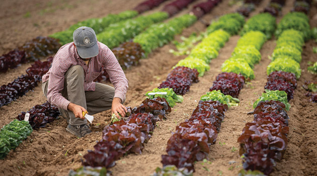

All Articles
Industry Insights
Bridging the Communication Gap Between Seed Suppliers & Distributors
Discover how SeedSense facilitates real-time data sharing between distributors and breeding companies to improve variety selection decisions.
Read Article
Business ImpactHow SeedSense Helps Seed Companies Boost Their Bottom Line
By improving data collection, streamlining collaboration, and delivering real-time insights, SeedSense enables seed companies to move faster and make smarter decisions.
Read Article
Product Features
Automated Reports: Simplify Your Seed Trials with SeedSense
Generate trial maps and evaluation reports instantly. Share tailored PDFs with suppliers, farmers, and teams via email links — no spreadsheets, no hassle.
Read Article
Data Management
Where's Your Trial Data? How to Keep It All in One Place
Discover how centralizing your trial data prevents lost insights and drives smarter decisions for your seed company.
Read Article
Product Features
SeedSense in English, Spanish, and Portuguese: Trial Anywhere
Learn how SeedSense's multilingual support empowers product development teams to manage trials seamlessly in their native language.
Read Article